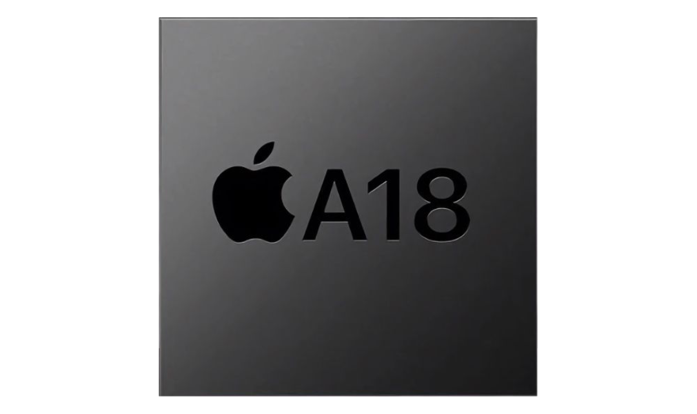

Apple A18
The Apple A18 and Apple A18 Pro are a pair of 64-bit ARM-based system on a chip (SoC) designed by Apple Inc.,
part of the Apple silicon series. They are used in the iPhone 16 and iPhone 16 Pro lineups and the iPhone 16e,
and built on a second generation 3 nm process by TSMC. Announced on September 9, 2024 and February 19, 2025,
they are the successors to the Apple A15 Bionic (exclusively on the entry-level iPhone models with 4-core GPU),
Apple A16 Bionic (exclusively on the standard iPhone models with 5-core GPU) and the Apple A17 Pro (exclusively on the premium iPhone models with 6-core GPU) processors, respectively.
Apple claims the A18 chip is up to 30% faster in CPU performance compared to iPhone 15 with the A16 Bionic chip and 50% compared to the iPhone 14 with the A15 Bionic chip. Also,
it can deliver the same CPU performance of the A16 Bionic chip while consuming 30% less power.
The A18 chip integrates a new Apple-designed four or five-core GPU,
now adding hardware accelerated ray tracing and mesh shading support to the non-Pro lineup.
Apple claims the new A18 chip is up to 40% faster in GPU performance compared to iPhone 15 with the A16 Bionic chip, and it can deliver the same GPU performance of the A16 Bionic chip while consuming 35% less power.